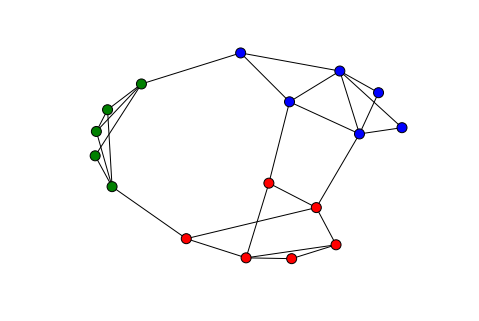
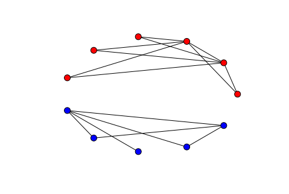

社区划分-Laplace矩阵与谱划分算法
社区划分
实际的网络可能有若干个社区组成，社区内部的节点之间连接紧密，但社区之间的连接却比较稀疏。如下图所示，相同颜色的节点连接紧密，不同颜色的节点连接稀疏。同一种颜色的节点可以划分到同一个分区中。

Laplace矩阵
###定义
对于一个简单图$G$，它可以用Laplace矩阵$L=(l_{ij})_{n\times n}$来表示（$n$为$G$中节点数）。它的定义如下：
也就是说，$L$是一个$n\times n$的矩阵，$n$为图$G$的节点数。对角线上的元素$l_{ii}$的值为节点$v_i$的度。其他位置的元素，如果节点$v_i$与节点$v_j$相连（$i\neq j$），则值为$-1$，否则值为$0$。
那么矩阵$L$可以表示为：$L=D-A$。矩阵$D$是图$G$的度矩阵，对角线上的元素表示各节点的度，其他元素为$0$。矩阵$A$表示图$G$的邻接矩阵。
性质
- $L$为实对称矩阵
- 对$L$的每行或者每列求和都等于0
- 矩阵$L$有一个特征值为0，对应的特征向量为${1,1,\dots ,1}$。（因为$L\cdot\{1,1,\dots ,1\}=0$）
- 矩阵$L$的其他特征值均大于$0$。
谱划分算法
谱划分算法是利用图的Laplace矩阵的特征值和特征向量对图实现划分的一种算法。
从线性空间的角度来理解，矩阵的特征向量可以理解为线性空间中相互正交的“基”（三维空间的三个维度），对应的特征值表示矩阵在各个基上的投影长度，特征值和特征向量唯一地确定了矩阵在线性空间中的位置。
划分思想
假设图$G$由完全独立的两个社区组成，也就是说图$G$由两部分组成。那么它的Laplace矩阵经过行列的交换，可以写成一个分块对角阵。主对角线上的两个对角块矩阵正好分别是两个社区自身的Laplace矩阵。

以上图的图$G$为例，它包含两个独立的社区。其Laplace矩阵为：
$L=\left( \begin{array}{cccccc|ccccc} 2 & -1 & -1 & 0 & 0 & 0 & 0 & 0 & 0 & 0 & 0 \\ -1 & 5 & -1 & -1 & -1 & -1 & 0 & 0 & 0 & 0 & 0 \\ -1 &-1 & 5 &-1 &-1 &-1 & 0 & 0 & 0 & 0 & 0 \\ 0 & -1 &-1 & 2 & 0 & 0 & 0 & 0 & 0 & 0 & 0\\ 0 &-1 &-1 & 0 & 2 & 0 & 0 & 0 & 0 & 0 & 0\\ 0 &-1 &-1 & 0 & 0 & 2 & 0 & 0 & 0 & 0 & 0\\ \hline 0 & 0 & 0 & 0 & 0 & 0 & 4 &-1 &-1 &-1 &-1\\ 0 & 0 & 0 & 0 & 0 & 0 &-1 & 2 & 0 & 0 &-1\\ 0 & 0 & 0 & 0 & 0 & 0 &-1 & 0 & 1 & 0 & 0\\ 0 & 0 & 0 & 0 & 0 & 0 &-1 & 0 & 0 & 2 &-1\\ 0 & 0 & 0 & 0 & 0 & 0 &-1 &-1 & 0 &-1 & 3\\ \end{array} \right)$求解矩阵的特征值和特征向量。如下式所示，特征值用$E$表示，特征向量矩阵用$V$表示：
$\left( \begin{array}{c} E\\ \hline V\\ \end{array} \right)=\left( \begin{array}{cccccc|ccccc} -0. & 2. & 6. & 6. & 2. & 2. & 5. & 0. & 4. & 2. & 1.\\ \hline -0.408 & -0.866 & -0.289 & -0.144 & -0. & -0. & 0. & 0. & 0. & 0. & 0.\\ -0.408 & -0. & 0.577 & 0.901 & 0. & 0. & 0. & 0. & 0. & 0. & 0.\\ -0.408 & -0. & 0.577 & -0.324 & -0. & -0. & 0. & 0. & 0. & 0. & 0.\\ -0.408 & 0.289 &-0.289 &-0.144 &-0. & -0.73 & 0. & 0. & 0. & 0. & 0.\\ -0.408 & 0.289 &-0.289 &-0.144 &-0.707 & 0.049 & 0. & 0. & 0. & 0. & 0.\\ -0.408 & 0.289 & -0.289 & -0.144 & 0.707 & 0.681 & 0. & 0. & 0. & 0. & 0.\\ 0. & 0. & 0. & 0. & 0. & 0. & 0.894 & -0.447 & -0. & 0. & 0.\\ 0. & 0. & 0. & 0. & 0. & 0. &-0.224 &-0.447 &-0.408 & 0.707 &-0.289\\ 0. & 0. & 0. & 0. & 0. & 0. & -0.224 &-0.447 &-0. &-0. & 0.866\\ 0. & 0. & 0. & 0. & 0. & 0. & -0.224 &-0.447 &-0.408 &-0.707 &-0.289\\ 0. & 0. & 0. & 0. & 0. & 0. & -0.224 &-0.447 & 0.816 & 0. & -0.289\\ \end{array} \right)$特征向量矩阵也是分块的形式，子块分别对应于每个社区的特征向量矩阵。此时，特征值0对应的特征向量有两个，分别对应于两个社区。所以Laplace矩阵中，特征值0对应的特征向量的个数，表示图$G$非联通分区的个数，对应于我们例子中的两个独立的社区。